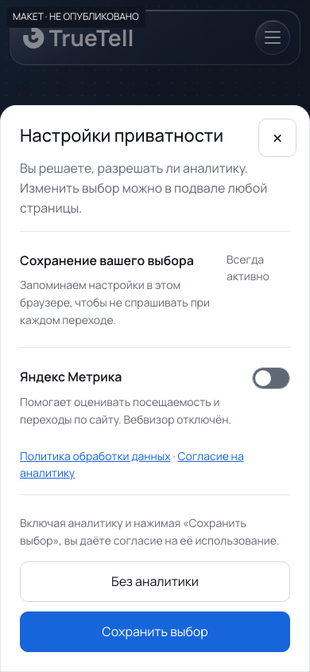
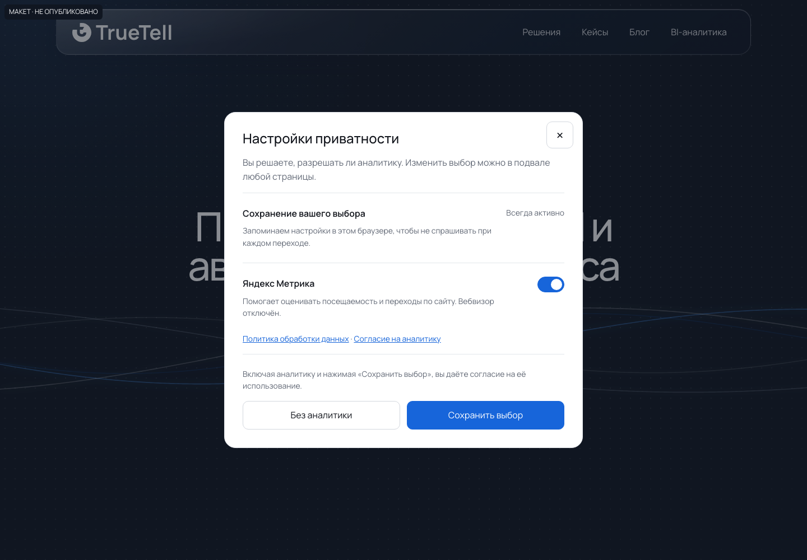
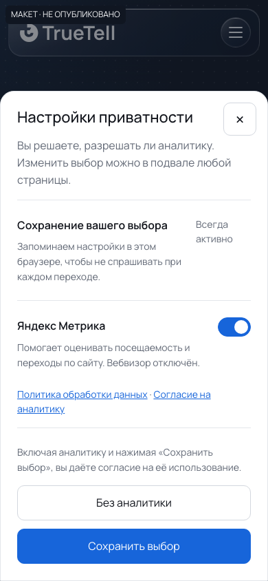
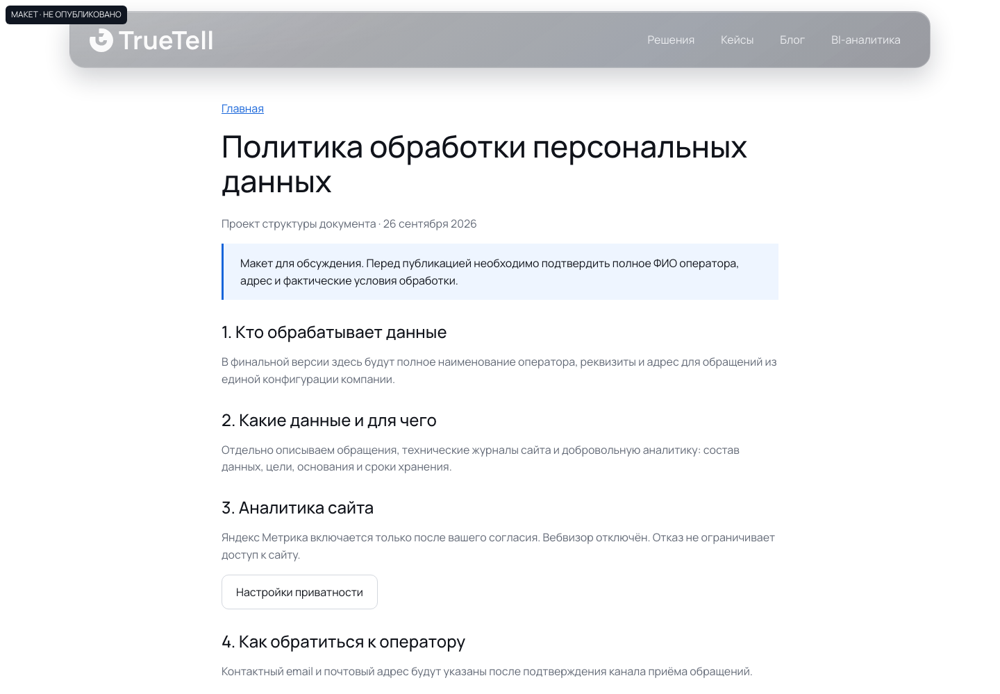
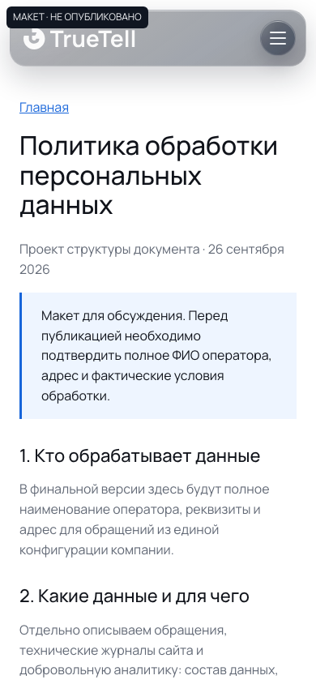

Приватность и аналитика TrueTell
Проект от 26 сентября 2026. Скриншоты макетов на фоне текущего сайта. На production изменений нет. Основной вариант: Метрика после согласия, Вебвизор отключён.


Настройки: аналитика отключена
Исходное состояние. Сохранение не включает аналитику, пока выключатель отключён.



Настройки: аналитика выбрана
Состояние черновика либо ранее сохранённого выбора. Изменения применяются кнопкой сохранения.




Страница политики
Первый экран структуры документа. Текст не готов к публикации.



